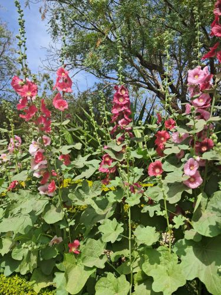

Urvi's Personal Site : Photography Hobby
Since I was young, I’ve loved clicking pictures. It helps me hold on to some of the most beautiful memories of my life. I enjoy capturing everyday beauty—sunlight falling on leaves, a smile between friends, or the texture of an old wall. Photography makes me pay more attention to the little things, and I love that.
The picture above is of some very beautiful flowers on the streets of Chandigarh.